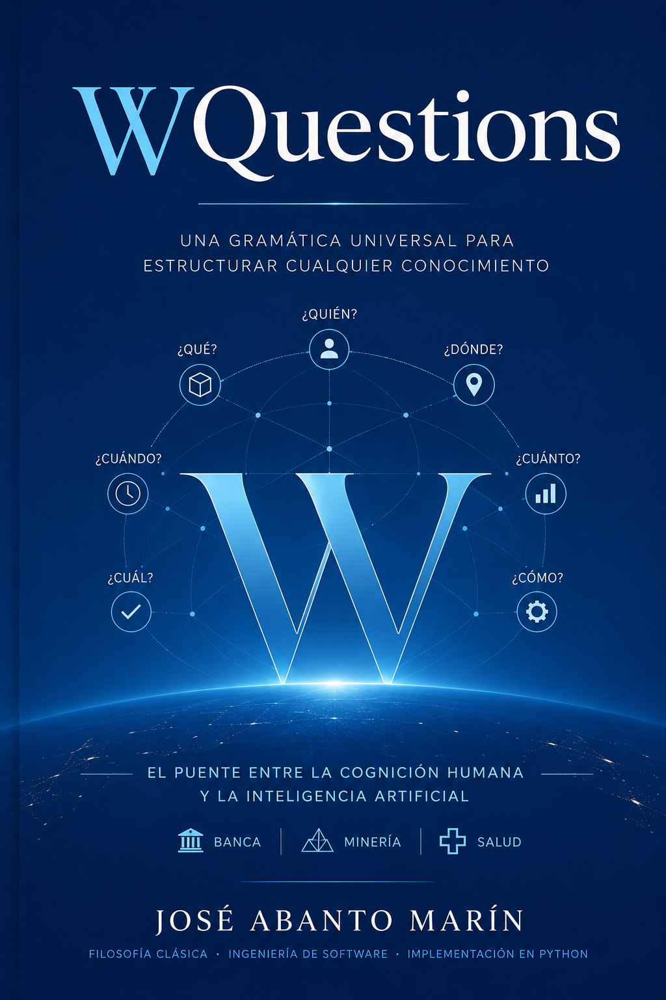

Arquitectura universal de la información
Las preguntas como coordenadas
Quién, qué, dónde, cuándo, cuánto, cuál y cómo. Siete preguntas bastan para organizar la información de cualquier dominio, y para que la inteligencia artificial trabaje con nuestros datos sin perder precisión.

El problema
La torre de Babel de los datos
La información existe, pero no puede dialogar. Cada sistema habla su propio idioma, y traducir entre ellos cuesta tiempo, dinero y contexto.
Sistemas aislados
Aplicaciones que no comparten ni el contexto ni la forma de sus datos.
Vocabularios incompatibles
Esquemas y ontologías que no se entienden entre plataformas.
Fragmentación
El conocimiento queda disperso: difícil de localizar, de relacionar y de reutilizar.
La solución
Un modelo basado en siete preguntas
Cualquier hecho puede describirse respondiendo siete preguntas. Funcionan como coordenadas: ubican, relacionan y transmiten un dato sin ambigüedad, igual que la latitud y la longitud ubican un punto en el mapa.
La gramática del conocimiento
Las siete coordenadas
¿Quién?
El agente o sujeto: quién actúa en el hecho.
¿Qué?
La acción o el objeto: el núcleo del dato.
¿Dónde?
El lugar: ancla el hecho a un espacio.
¿Cuándo?
El momento: sitúa el hecho en el tiempo.
¿Cuánto?
La cantidad y su unidad hacen el dato medible y comparable.
¿Cuál?
Distingue la clase o categoría entre las opciones.
¿Cómo?
El predicado que conecta: la relación y el método.
Interoperabilidad
Del caos a un idioma común
Si todos los sistemas estructuran sus datos con las mismas siete preguntas, un hospital y un banco pueden intercambiar información sin traducciones a medida. No hace falta un estándar propietario ni un acuerdo entre cada par de sistemas: las preguntas ya son comunes a todos.
- Sin middleware a medida entre cada par de sistemas.
- Sin traducciones ad hoc que se rompen con cada cambio.
- Sin pérdida de contexto al cruzar de una plataforma a otra.
IA y modelos de lenguaje
El puente con los modelos de lenguaje
Los modelos de lenguaje ya razonan con preguntas. Estructurar los datos así acorta la distancia entre lo que decimos y lo que la máquina procesa.
Unidades de significado
Los modelos tratan las preguntas como unidades de sentido; este modelo las hace explícitas.
Datos que un modelo consume
Un hecho estructurado en siete ejes se lee sin preprocesarlo aparte.
Puente humano-máquina
El lexicon traduce el lenguaje del usuario a hechos, y a la inversa.
Casos de uso
El mismo modelo en cualquier dominio
La Parte V del libro construye sistemas reales con esta gramática. Cada tarjeta lleva al capítulo donde se desarrolla.
Una historia clínica
Consulta, historia longitudinal, hospitalización y farmacia interna.
El dominio más exigente: un banco
Donde la elegancia se vuelve exigencia regulatoria.
Una operación minera
Cadenas causales, sensores, comisionamiento y mantenimiento.
Una municipalidad
Trámites de punta a punta y el principio «una sola vez».
Una universidad
Prerrequisitos como grafo dirigido y planes de estudio.
Un sistema de ventas
Comercio minorista con impuestos, comprobantes y multi-divisa.
Del concepto al código
No se queda en la teoría
El libro incluye implementaciones en Python y un prototipo ejecutable que construye estos sistemas desde el primer capítulo.
El autor
José Abanto Marín
José Abanto Marín lleva cerca de treinta y cinco años construyendo sistemas a la medida, oficio del que nació Ghenesis, un framework que persiste la lógica de negocio en la propia base de datos. De esa práctica larga (y de una curiosidad que también lo lleva a la física cuántica y a la filosofía) surge WQuestions, el intento de reunir tres décadas de preguntas bajo una sola idea arquitectónica.